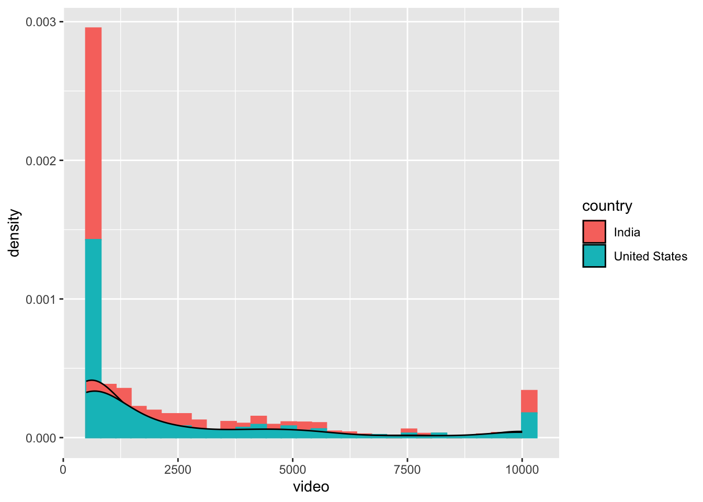

The dataset youtubers.csv comprises information about top 1000 YouTube influencers as of Sep 2022 (original dataset could be accessed from Kaggle). This dataset includes the following columns:
Ranking
Channel name
YouTuber name
Category
Country
Number of subscribers
Average number of views (on the channel)
Average number of likes (on the channel)
Average number of comments (on the channel)
Additionally, there is a supplementary dataset named channel.csv, which I created for this (yep, I made it up!). It contains the number of videos uploaded on each channel and and the year of channel creation. Please use the youtuber.csv and channel.csv to complete the tasks outlined below. You are feel free to submit a R script or a markdown file. You are free to submit your responses in the form of an R script or a markdown file. If you choose to use an R script, you can include your answers as comments (begining with a #). As long as your code can render the same results as mine, I will give it full credits. In other words, the elegance of code will not be considered part of the rubrics. Additionally, there are no restrictions on the packages you can use. If you encounter challenges during the assignment, please submit your best effort, and your work will be evaluated based on your attempts.
Note
Disclaimer: Please be aware that the data obtained from Kaggle may not be entirely accurate. It’s important to note that we are utilizing this data solely for the purpose of practice and learning, rather than relying on it for real-world applications.”
Question 1: Data Cleaning
Upon importing the youtubers.csv, you may observe that certain column names and rows require some basic data cleaning:
Rename the following column names (you are freee choose alternative names if you prefer, but please keep them clear and straightforward):
“S.no” to “ranking”
“X.views..Avg….” to “views”
“X.likes..Avg….” to “likes”
“X.comments..Avg….” to “comments”
Remove the column “Category_3”, as it will not be used in subsequent analyses.
Ensure that there are 1000 unique YouTubers in the list. If you encounter duplicate rows, remove them based on the column of “ranking” (or the previous “S.no”).
Save your result in a new dataframe.
library(tidyverse)
── Attaching core tidyverse packages ──────────────────────── tidyverse 2.0.0 ──
✔ dplyr 1.1.0 ✔ readr 2.1.4
✔ forcats 1.0.0 ✔ stringr 1.5.0
✔ ggplot2 3.4.3 ✔ tibble 3.1.8
✔ lubridate 1.9.2 ✔ tidyr 1.3.0
✔ purrr 1.0.2
── Conflicts ────────────────────────────────────────── tidyverse_conflicts() ──
✖ dplyr::filter() masks stats::filter()
✖ dplyr::lag() masks stats::lag()
ℹ Use the conflicted package (<http://conflicted.r-lib.org/>) to force all conflicts to become errors
Let’s take a quick glimpse of the data. We are particularly interested in two variables: “country” and “category” (tip: do not forget to convert them into factor variables):
How many unique countries and categories (of these YouTube channels) exist in the dataset (omiting the NA value)?
Which are the top 3 countries and top 3 categories to which these YouTubers belong (omiting the NA value)?
Utilize a bar chart to visualize the distribution of the two variables separately: “country” and “category” (note: There are no specific requirements for aesthetics; you can choose the visualization style that you find most suitable.)
Algeria Argentina Bangladesh Brazil Colombia
5 6 3 79 10
Ecuador Egypt France India Indonesia
1 7 5 208 38
Iraq Japan Jordan Malaysia Mexico
6 4 1 1 66
Morocco Pakistan Peru Philippines Russia
3 7 2 13 32
Saudi Arabia Somalia Spain Thailand Turkey
4 1 5 15 4
United Kingdom United States NA's
9 293 172
summary(youtubers$category)
Animals & Pets Animation ASMR
2 94 2
Autos & Vehicles Beauty Daily vlogs
2 2 37
Design/art DIY & Life Hacks Education
3 10 32
Fashion Fitness Food & Drinks
3 3 16
Health & Self Help Humor Movies
3 15 101
Music & Dance Mystery News & Politics
226 1 49
Science & Technology Sports Toys
17 9 21
Travel Video games NA's
1 63 288
These 1000 YouTubers are curated based on the count of subscribers. Now let’s further classify these influencers by the following steps.
Create a new column named “type” and recode the values according to the following criteria:
If the number of subscribers exceeds 100 million, code it as “super influencer”;
If the number of subscribers falls within the range of 10 million to 100 million, code it as “mega influencer”;
If the number of subscribers falls within the range of 1 million to 10 million, code it as “power influencer”.
How many YouTubers are classified under each of these three types?
Use a boxplot to show distribution of the views for these three influencer type. (tip: Given the potentially large range of view counts, consider applying data transformations to enhance visualization if necessary, such as log transformation [log()])
Note
Disclaimer: Please note that the classification applied here may not necessarily align with established categories found in social media influencer research. This classification is for the purpose of this assignment and may not reflect the nuances present in the broader literature.
incorporate the channel.csv dataset and conduct further analysis. Follow these steps:
Import the channel.csv, and merge it with the modified youtubers.csv dataset (note: not the original one, but the one that has been modified as per previous steps), based on channel_id (from channel.csv) and channel ( from youtubers.csv) columns.
Calculate the average number of videos uploaded to YouTube for each of the three influencer types (tip: summarise() function)?
Investigate the relationship between the number of videos uploaded to the channel and the number of comments specificall among all the mega influencer (tip: remember to exclude the other two types). Visualize this relationship using a scatterplot with a linear fit line. If required, apply appropriate data transformations to enhance the clarity of the relationship.
Note
Disclaimer: Again, please be aware that channel.csv iis an arbitrary dataset and does not reflect the actual figures for the respective YouTube channels. We emphasize that we are employing this data exclusively for the purpose of practice and learning, and it should not be considered suitable for real-world applications.
In this final analysis, we aim to compare YouTube channels from the United States and India, excluding all other countries and NA values.
Generate summary statistics that include the means of views, likes, and comments for channels in both the United States and India.
Visualize the distribution of the number of videos uploaded to YouTube by utilizing both a histogram and a density plot on a single graph. Please use different colors to represent the data from these two countries. (tip: geom_histogram() and geom_density()).
Create a line plot to visualize the count of YouTube channels created each year, distinguishing between the counts for the United States and India. Please use different colors to represent the data for these two countries in the line plot (tip: geom_line())
# A tibble: 2 × 4
country mean_views mean_likes mean_comments
<fct> <dbl> <dbl> <dbl>
1 India 1316478. 86862. 2650.
2 United States 1485326. 60694. 2558.
youtubers_compare %>%ggplot(aes(x = video, color = country, fill = country)) +geom_histogram(aes(y = ..density..)) +geom_density(color ="black")
Warning: The dot-dot notation (`..density..`) was deprecated in ggplot2 3.4.0.
ℹ Please use `after_stat(density)` instead.
`stat_bin()` using `bins = 30`. Pick better value with `binwidth`.

youtubers_compare %>%ggplot(aes(x = year, color = country)) +geom_line(stat ="count")